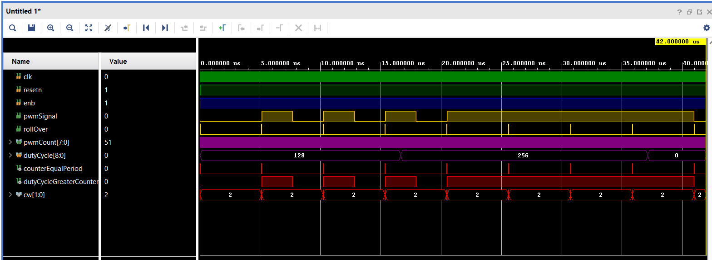
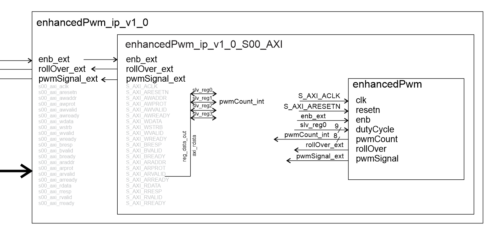
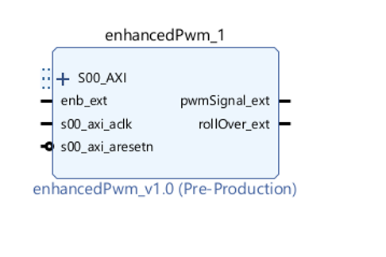
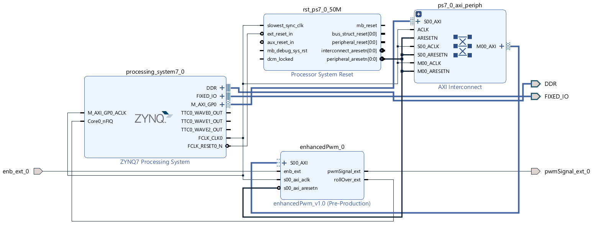

| Lecture | 32 |
| Code | enhancedPwm.vhd enhancedPwm_tb.vhd |
| Class Objectives | Have a firm understanding of the AXI interface that is used to allow the Zynq to communicate with your intellectual property (IP). |
Zynq
The Zynq 7010 chip is separated into 2 halves, a processing system and a programmable logic section. Up to this point, we have been working exclusively with the programmable logic section through Vivado. It's now time to turn our attention to the processing system.The processing system contains a pair of ARM Cortex-A9 CPUs. Some important facts about the Arm-A9:
- I sometimes refer to the ARM Cortex-A9 as the "Zynq processor" in my written documents.
- It has a 32-bit word. This means that all operations are performed in 32-bits units. This includes reading and writing memory and arithmetic and logic operations.
- It is byte addressable. This means that that every increment in address moves forward 8-bit.
- Has a built in USART that will allow us to communicate with our programs using PuTTy.

The AXI interface provides you with a memory mapped interface to any signal that you provide as part of your IP entity description. This means, for example, that you could set the oscilloscope trigger voltage by writing a 16-bit 2's complement value to address 0x43C00000. You could read ch1Data16bitSLV by reading from address 0x43C00004. While doing this you can still send signals directly from oscilloscope outside the chip. For example, the HDMI signals do not need to go through the AXI interface to reach the correct Zynq pins.
The AXI interface will consume a lot of our attention when converting out IP into a form that can interface with the Arm A9.
Enhanced PWM module
In order to motivate our discussion of the AXI interface and how we can use it to communicate with IP, we will build an AXI interface to the enhancedPwm module.The enhancedPwm module is virtually identical to that you built back in the first lab. I included a rollOver
entity enhancedPwm is
PORT ( clk : in STD_LOGIC;
resetn : in STD_LOGIC;
enb: in STD_LOGIC;
dutyCycle: in STD_LOGIC_VECTOR(8 downto 0);
pwmCount: out STD_LOGIC_VECTOR(7 downto 0);
rollOver: out STD_LOGIC;
pwmSignal: out STD_LOGIC);
end enhancedPwm;
The addition of the rollOver just signals when the internal counter
rolls over from 256 to 0 by pulsing high. You can see the behavior
in this timing diagram. Yes, the rollOver signal is an external
version of the counterEqualPeriod status signal.

Interfacing your IP with the AXI interface
Each of the signals on the entity interface for the enhancedPwm has the following direction and destination.| Signal | Direction | Destination | Note |
| clk | input | S_AXI_ACLK | The S_AXI_ACLK signal is part of the default AXI interface |
| resetn | input | S_AXI_ARESETN | The S_AXI_ACLK signal is part of the default AXI interface |
| enb | input | PLKEY4 | Programmable logic can only conncet the the "PL" keys, never the "PS" keys. |
| dutyCycle | input | Arm memory at address 0x43C00000 | This will allow you to write the dutyCycle in your code |
| pwmCount | output | Arm memory at address 0x43C00004 | This will allow you to read the pwmCount in your code |
| rollOver | output | Arm Interrupt | We can have an ISR that runs every time the counter rolls over from 256 to 0 |
| pwmSignal | output | J11 header pin 3 | You could connect this header pin to a LPF and have a rough DAC. |
- Name of the IP. enhancedPwm in our example.
- Number of words of memory dedicated to the IP memory-mapped interface. 4 in our example.
- enhancedPwm_ip_v_0.vhd This file will interface with the AXI bus.
- enhancedPwm_ip_v_0_S00_AXI.vhd This file will interface with our IP.

To make this happen you will have to edit the enhancedPwm_ip_v_0.vhd and enhancedPwm_ip_v_0_S00_AXI.vhd files. The instructions are given in one of the "How To" documents.
Block diagram
When you complete wrapping your IP in the AXI interface, your IP will be available as an IP block like that shown in the following diagram.
You will then connect your IP block to the Arm-A9 using the block diagram tool.

A few details remain like connecting the enb_ext_0 and pwmSignal_ext_0 signals to Zynq pins using an XDC file. After this, you will synthesize the design and generate a bitstream. The result will be a file that you can import into Vitis where you can program the Arm-A9.